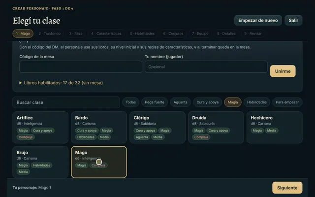
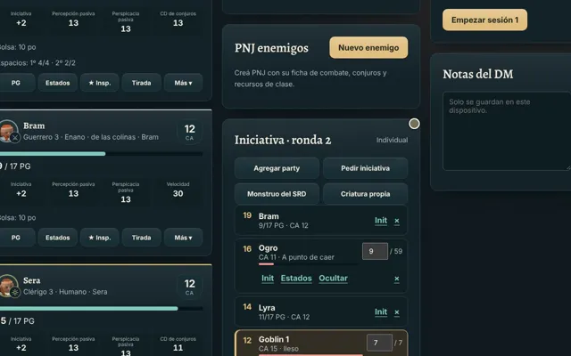
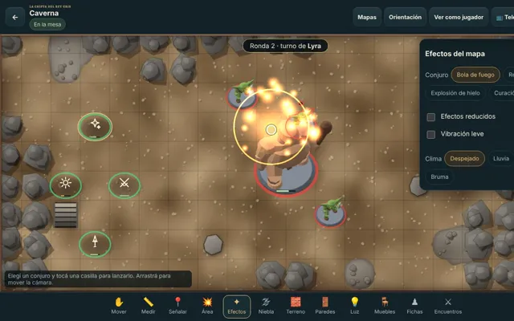
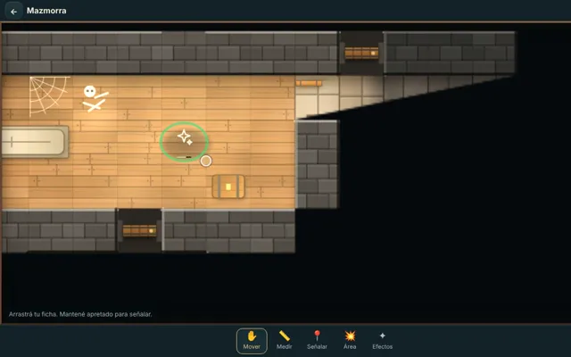

Creador de personajes
Clase, raza, trasfondo, características, conjuros y equipo, una decisión por pantalla. 13 clases, más de 150 razas y los libros de 2014 que elija tu mesa.
D&D 5e · reglas 2014 · en español
Tu personaje, tu mesa y el tablero de juego, en vivo y en un solo lugar.
Sin registrarte: tus fichas quedan en tu dispositivo. Con una cuenta, en todos.
Todo lo que necesita tu mesa

Clase, raza, trasfondo, características, conjuros y equipo, una decisión por pantalla. 13 clases, más de 150 razas y los libros de 2014 que elija tu mesa.

El DM comparte un código y ve a la party en tiempo real: puntos de golpe, iniciativa, estados, pedidos de tirada y botín. Cada jugador edita solo su ficha.

Apuntá un conjuro desde tu ficha y caé sobre el mapa: áreas, salvaciones y daño calculados con tus números, y un efecto que ve toda la mesa.

Paredes, puertas y antorchas: cada jugador ve lo que su personaje ve, con luz brillante, penumbra y visión en la oscuridad. También sobre tus mapas de Dungeondraft.
Creá tu personaje en minutos o armá la mesa para tu grupo.